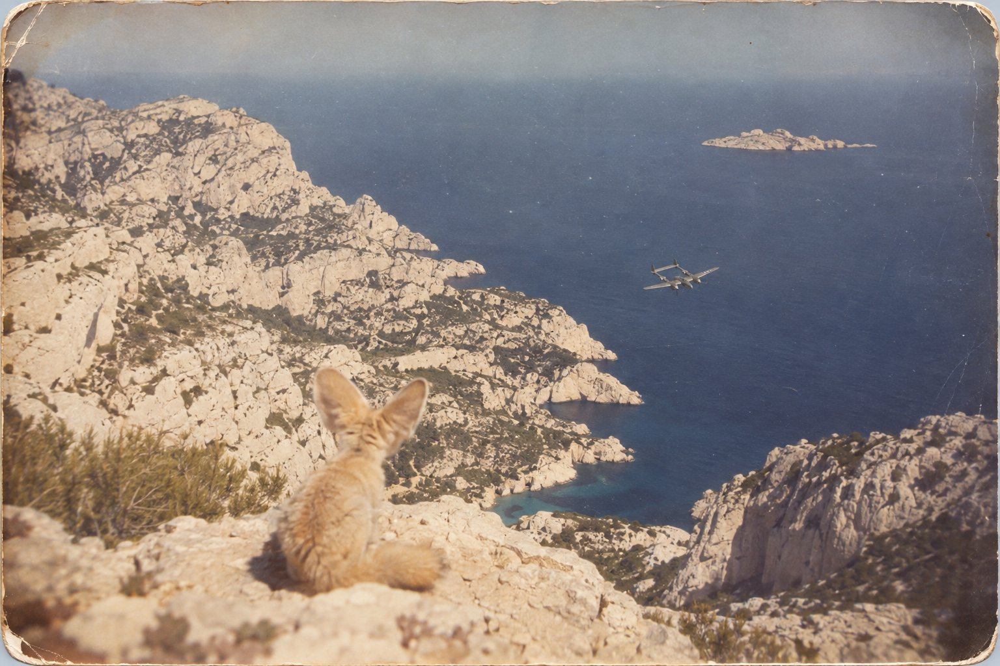

Обратный адрес

I
На Корсике в то лето говорили, что у французского майора в разведывательной группе два возраста: один в бумагах, другой в кабине. По бумагам ему было сорок четыре, и американцы, которым принадлежали самолёты, считали, что это лет на десять больше, чем можно. В кабине ему было, судя по тому, как он туда залезал, все шестьдесят.
Залезал он с помощью двух механиков. Один стоял на крыле и тянул, другой подсаживал снизу, и оба делали вид, что ничего особенного не происходит, потому что майор не любил, когда его жалеют. Он был большой, тяжёлый, с круглой лысеющей головой, а кабина «Лайтнинга» строилась на людей помоложе и поуже. Кости у него были собраны после стольких аварий, что в госпитале в Гватемале, где он пять суток пролежал без сознания, врачи, говорят, удивились, что собирать вообще есть что. Застегнуть лётный комбинезон он сам не мог, голову назад повернуть не мог тоже, и если бы сзади к нему пристроился чужой истребитель, майор узнал бы об этом последним. Механики пристёгивали ему парашют, которым он вряд ли сумел бы воспользоваться, надевали шлем, подключали кислород и радио и спрыгивали на землю.
Самолёт был без пушек. В носу, где у истребителя стоят пулемёты, у этого «Лайтнинга» стояли фотокамеры, и вся его война была в том, чтобы пройти на большой высоте над тем, что хотели знать генералы, снять это и вернуться. Защищали его только высота и скорость. Две моторные гондолы по бокам, хвост на двух балках, короткая кабина посередине. Издали он был похож на букву, которую ещё не придумали.
Утром тридцать первого июля, до вылета, майор написал письмо другу и сложил его вчетверо. Письмо сохранилось, и одну строчку из него потом будут цитировать пятьдесят лет: если меня собьют, я ни о чём не пожалею. Цитируют обычно только её, как будто больше он ничего не написал.
— К половине первого, — сказал он механику, когда тот уже спрыгнул. — Поставьте кофе.
Механик кивнул. Майор ещё ни разу не возвращался вовремя, но всегда возвращался. Однажды не дотянул до своего поля и сел на чужое. Из-за этой его привычки вечером тридцать первого первым делом обзвонили соседние поля.
В восемь сорок пять «Лайтнинг» ушёл с Борго на север, к Альпам. Ему надо было снять дороги и мосты восточнее Лиона, у Гренобля и Анси: союзники готовились высадиться в Провансе, и генералам нужно было знать, что там стоит и куда смотрит.
II
На десяти тысячах метров небо делается тёмно-синим, почти фиолетовым, даже утром, а земля внизу лежит, как карта, которую забыли раскрасить. Майор любил эту высоту. Там не было войны, там был только холод, гул двух моторов и белая полоса инея по краю фонаря. Камеры щёлкали сами, когда он включал их над нужным квадратом. Его работа была держать машину ровно и не думать.
Как раз этого он никогда не умел. Это ему и американцы ставили в вину: что он в полёте читает, что пишет в уме страницы, вместо того чтобы смотреть на приборы. Внизу проходила Савойя, белые зубцы гор и озеро Анси, синее, как чернильная клякса. А он думал о песке.
Двадцать восьмой год, Кап-Джуби. Испанский форт на краю Сахары, деревянный барак, несколько механиков, ящик вместо стола и океан с одной стороны, а с другой пустыня, которая начиналась прямо за проволокой и кончалась, как говорили, у Нила. Он был начальником этой посадочной площадки для почтовых самолётов, и вся его власть состояла в том, чтобы договариваться с маврами, которые иногда стреляли по самолётам, а иногда брали в плен лётчиков и просили за них выкуп. Ночи там были такие, что звёзд было больше, чем темноты.
Там он и приручил фенека.
Фенек — это песчаная лисица, самая маленькая лиса на свете, меньше кошки. Шерсть у неё цвета песка, лапы мохнатые, чтобы не обжигаться, а уши такие, что кажется, будто она собиралась стать зайцем и передумала на полдороге. Матери он тогда написал, что растит фенека и что тот дикий, как лев. Это была правда. Первые две недели фенек сидел в ящике и, как только кто-нибудь подходил, шипел и щёлкал зубами. Механики говорили, что из него выйдет хорошая шапка. Майор, тогда ещё не майор, а просто начальник площадки двадцати восьми лет, стал приходить к ящику каждый вечер в одно и то же время, садиться в двух шагах и молчать. Он ничего не знал о том, как приручают лис. Он просто подумал, что если бы его самого посадили в ящик посреди чужого форта, ему было бы спокойнее, если бы кто-то приходил в одно и то же время и ничего от него не хотел.
На четвёртый вечер фенек перестал шипеть. На десятый взял финик из руки. Через месяц спал у него на ногах, когда он писал по ночам книгу про почтового лётчика, и уходил только перед рассветом, потому что рассвет фенек считал временем неприличным.
Когда в двадцать девятом его перевели в Южную Америку, фенека нельзя было взять с собой. Он отнёс его за проволоку, к барханам, ночью, и посадил на песок. Фенек не ушёл. Он сидел и смотрел, и тогда человек сказал ему то, что люди всегда говорят, когда уезжают: я вернусь. Он не вернулся. Потом были Буэнос-Айрес, Патагония, ветер, который переворачивал самолёты, Консуэло, Ливийская пустыня, где он упал и три дня шёл без воды и видел в песке маленькие следы, похожие на цветок из трёх лепестков, и думал о своём фенеке, который, может быть, ещё жив и, может быть, ещё сидит у проволоки. Потом война, Нью-Йорк и книжка, которую он написал для детей и про которую все взрослые думали, что она про них.
Над Греноблем он прошёл, как велели. Камеры отщёлкали своё. Он развернул машину на юг, к морю, к дому.
III
Левый мотор начал сдавать над Дромом.
Сначала просто изменился звук, как меняется голос у человека, который ещё говорит, но уже думает о другом. Потом стрелка оборотов поползла вниз и задрожала. «Лайтнинг» умел лететь на одном моторе, на то их у него и было два, и майор сделал всё, что положено: убрал газ, выровнял машину, которую тянуло влево, проверил давление масла. Масло было плохое. На одном моторе на такой высоте самолёт идёт тяжело, и он начал спускаться, медленно, длинными плавными ступенями, как спускаются по лестнице в доме, где все спят.
На восьми тысячах он понял, что до Корсики можно и не дотянуть. На шести — что, скорее всего, не дотянет. Он не испугался. Он падал столько раз, что страх у него давно стёрся, как надпись на монете, и осталось только внимание. Он стал смотреть вниз, на побережье, выбирая, куда садиться, если придётся садиться, и прикидывая, сколько у немцев на этом берегу аэродромов и как быстро они поднимают истребители. Выходило, что быстро.
Внизу, справа, лежала белая земля.
Он сначала подумал, что это облако. Потом — что это соль, как в солончаках на юге Марокко. А это были скалы. Марсельские Каланки: белый известняк, изрезанный узкими заливами, голый, без единого дерева на вершинах, раскалённый июльским солнцем добела. С шести тысяч метров они выглядели в точности как пустыня. Как барханы за проволокой Кап-Джуби, если смотреть на них с крыла почтового «Бреге» в полдень.
— Направо, — сказал кто-то рядом.
Он посмотрел на правое колено. На колене, поверх ремня от парашюта, сидел фенек.
Он был такой же, как в двадцать восьмом: песчаный, с огромными ушами, просвечивающими розовым на солнце, и чёрным влажным носом. Только глаза стали другими. В двадцать восьмом это были глаза зверя, который решает, укусить или нет. Теперь это были глаза того, кто давно всё решил и теперь просто ждёт, пока решишь ты.
Майор не удивился, и это его самого удивило. Он поправил кислородную маску, которая мешала говорить, и спросил:
— Ты откуда?
— Оттуда, — сказал фенек и мотнул головой куда-то вверх и вбок, где за фонарём ничего не было, кроме синего. — Ты бы лучше на приборы смотрел. Левый у тебя сейчас совсем встанет.
Левый встал. Майор поймал машину, выровнял, перевёл правый на полный газ. Самолёт пошёл ниже, к морю, и белые скалы стали ближе.
— Я тебя искал, — сказал майор. — В тридцать пятом, в Ливии. Видел следы.
— Это был не я. Это была какая-то тамошняя, египетская, она даже не знает, кто ты такой. А я сидел у проволоки.
— Долго?
Фенек почесал задней лапой за ухом. Ухо было больше лапы раза в три.
— Ты сказал, что вернёшься. Ты в одно и то же время приходил, каждый вечер, тридцать четыре вечера подряд. Я считал. Потом ты ушёл. А я привык, что в это время кто-то приходит. Знаешь, что бывает, когда привыкнешь, а приходить перестали? Ничего не бывает. Сидишь и ждёшь, а время это так и остаётся пустым, его ничем не займёшь. Лисы в пустыне живут недолго, лет десять. Но время, которое пустое, оно не кончается. Я, можно сказать, и сейчас там сижу.
Майор помолчал. Внизу было море, такое же синее, как озеро Анси, только без берегов.
— Прости, — сказал он.
— Да брось. Ты потом про это книжку написал. Мне один верблюд пересказывал. Там я рыжий.
— Ну, рыжий. Детям так понятнее.
— И уши маленькие.
— Я плохо рисую.
— Ты прекрасно рисуешь, — сказал фенек. — Ты просто не помнил, какие они. Это ничего. Ты зато помнил главное. Что если приручил, то это навсегда. Только у тебя там получилось, будто это одному надо. Тому, кто приручил. А это в обе стороны, понимаешь? Ты за меня отвечаешь, а я за тебя. Вот я и пришёл.
— Зачем?
Фенек посмотрел на приборную доску, потом в окно, потом на него.
— Ты до Корсики не долетишь, — сказал он просто. — Ты сам знаешь. Масло уходит, правый греется. Можешь прыгать, но ты не выпрыгнешь, ты в этой кабине как пробка в бутылке, тебя сюда двое запихивали. Можешь садиться на воду, но на этой машине на воду садиться — всё равно что на стену. А там, сзади, повыше, к тебе уже кто-то идёт. Ты не видишь, ты голову повернуть не можешь. А я вижу. Так что я подумал: в первый раз ты меня оставил одного, а во второй я тебя одного не оставлю. Не надо тебе одному.
Майор долго не отвечал. Самолёт шёл над водой, и белые скалы Каланков проплывали справа, и островок впереди, совсем голый.
— У меня в Борго кофе стоит, — сказал он наконец. — Я обещал к половине первого.
— Знаю. Они подождут. Они ведь и так всегда ждут, ты ни разу не прилетел вовремя.
— А Консуэло?
Он сказал это не фенеку, а куда-то вперёд, в фонарь. Фенек всё равно услышал.
— Тут у тебя вот что, — сказал он и тронул лапой его левое запястье. На запястье под рукавом комбинезона был серебряный браслет, который Консуэло подарила ему в Нью-Йорке: плоская пластинка на цепочке, на ней его имя, её имя и адрес американского издательства, того самого, которое выпустило книжку. Она тогда сказала, что если он опять где-нибудь разобьётся и его опять будут искать, то пусть найдут, кому сообщить. Он смеялся. Потом носил не снимая.
— Это письмо, — сказал фенек. — С обратным адресом. Его доставят.
— Кто?
— Море. Оно медленное, но оно всё доставляет. Ты ведь сам всю жизнь возил почту, должен понимать.
— А я?
Фенек вздохнул так, как вздыхают взрослые, когда ребёнок в четвёртый раз спрашивает одно и то же перед сном.
— А ты пойдёшь со мной. Ты же сам про это писал. Это тело тебе там не нужно, его туда всё равно не дотащить, оно тяжёлое. Сорок четыре года, а аварий столько, что я со счёта сбился. Оставишь его, как пальто на вешалке. Я тебе дорогу покажу.
— Куда?
— Туда, где все, кого приручили. Там песок. Ты любишь песок.
Майор засмеялся. В маске это прозвучало глухо, как кашель.
— А что, если я откажусь?
— Тогда я посижу с тобой до самой воды, — сказал фенек. — Всё равно не уйду. Ты меня этому научил.
IV
Немецкий лётчик, который шёл в тот день над побережьем между Марселем и Тулоном, был молод и любил книги. Он увидел внизу, тысячи на три метров ниже себя, «Лайтнинг» с двумя хвостами, который тянул к морю на одном моторе, неуклюже, низко, будто ему было уже всё равно. Немец сделал то, чему его учили: зашёл сверху, со стороны солнца, откуда не видно, и нажал на гашетку.
Много лет спустя, когда он стал совсем старым, он рассказал, что стрелял и видел, как самолёт упал в море. Он сказал, что если бы знал, кто в кабине, никогда бы не стал стрелять, что доказать ничего не может и что всю жизнь надеялся: может быть, это был не он. Он мог ошибиться. Очередь сверху, на скорости, по машине, которая уже падает, — тут кто угодно ошибётся.
Это действительно был не он.
Когда трассы прошли над фонарём, в кабине уже никого не было. Майор видел их со стороны, сверху, золотые пунктиры, которые прошли мимо и погасли над водой. Он стоял на чём-то, что держало, хотя под ногами ничего не было, и рядом стоял фенек, и уши его светились на солнце. Внизу «Лайтнинг», в котором больше никто не держал ручку, медленно опустил нос, как опускает голову усталая лошадь, и пошёл к воде, почти отвесно, всё быстрее, и вошёл в неё у самого острова, и вода сомкнулась, будто ничего не было. Немец сделал над этим местом круг и ушёл на север.
— Он теперь всю жизнь будет думать, что это он, — сказал майор.
— Будет, — согласился фенек.
— Жалко его.
— Ты всех жалеешь. Это у тебя профессиональное. — Фенек сел и обернул хвост вокруг лап. — Ничего, когда-нибудь он тоже сюда придёт, и ты ему скажешь.
— Скажу, — сказал майор. Он посмотрел вниз ещё раз, на воду, на белые скалы, которые с этой высоты были совсем как пустыня, и вдруг спросил: — А пальто?
Фенек понял, о чём он.
— Сам смотри.
На поверхности моря, там, где вошёл самолёт, медленно расходилось масляное пятно, и больше ничего. Тела не было. Тело осталось не в воде и не в кабине, а там, где оставляют то, что не нужно в дорогу: в том промежутке между одним мигом и другим, куда не достают ни сети, ни водолазы. А серебряный браслет, соскользнувший с запястья, которого больше не было, зацепился за клочок ткани от рукава и ушёл на дно отдельно от всего, сам по себе, как письмо, которое бросили в ящик.
— Пошли, — сказал фенек. — Тут недалеко.
Это было неправдой. Это было очень далеко. Но идти туда оказалось легко, как бывает легко идти по твёрдому песку утром, пока солнце ещё не поднялось, и майор шёл и смеялся, потому что впервые за много лет у него ничего не болело.
V
В половине первого в Борго механики стояли у полосы и смотрели на север. Кофе сварили и не пили. В час дня один сказал, что майор, наверное, опять сел не там. В половине третьего, когда горючего у «Лайтнинга» уже не могло остаться ни на одной лишней минуте полёта, они перестали смотреть на север и ушли в палатку. Вечером обзвонили соседние аэродромы. Через восемь дней майора записали пропавшим без вести, предположительно сбитым.
Потом был август, высадка в Провансе, освобождение, конец войны. Его искали в горах, потому что маршрут шёл через горы, и в море у Ниццы, и под Агэ, где в замке его сестры он когда-то женился. В Каркеранне нашли и похоронили человека во французской форме, которого никто не мог опознать, и одни решили, что это он, а другие — что не он, и обе стороны пятьдесят лет об этом спорили. Писали, что его сбили, что он заблудился, что ему стало плохо на высоте и он потерял сознание, что он сам не захотел вернуться. Написали книги. Поставили памятники. Дети во всём мире читали его книжку и спрашивали взрослых, куда делся лётчик, и взрослые не знали, что ответить, и говорили, что он улетел к звёздам, потому что так говорят детям.
Седьмого сентября девяносто восьмого года, в штормовой день, марсельский траулер работал у острова Риу. Сеть шла тяжело, рыбы в ней было мало, а мусора много: камни, водоросли, ржавая проволока. Шкипер, перебирая улов, заметил в сером комке ила что-то тёмное, плоское, на цепочке. Он принял это за мусор и хотел выбросить. Потом потёр пальцем, потом, уже на берегу, отчистил как следует, и под чернотой проступили буквы.
Он прочёл имя лётчика и имя его жены и адрес нью-йоркского издательства, которого к тому времени давно уже не существовало. Ему сначала не поверили и сказали, что он всё подстроил, чтобы прославиться. Потом поверили. А через два года водолаз нашёл на дне у того же острова обломки «Лайтнинга», рассыпанные на глубине в несколько десятков метров. Ещё через три года их подняли и на одном кусочке обшивки прочли заводской номер. Номер совпал.
Обломки рассказали всё, что могли. Самолёт вошёл в воду почти отвесно, на большой скорости, как входит машина, которой никто не управляет. Следов пуль на найденных кусках не было. Останков человека среди них тоже не было.
Браслет теперь лежит под стеклом, и люди, которые приходят на него посмотреть, обычно наклоняются и читают адрес. Им кажется странным, что на браслете лётчика выгравирован адрес издательства. Как будто кто-то заранее знал, что однажды эта вещь окажется на дне моря и её надо будет вернуть.
Консуэло к тому времени уже почти двадцать лет как не было в живых, и вернуть его было некому. Но письмо дошло. Море медленное, оно всё доставляет. Пятьдесят четыре года, почти к самому столетию со дня его рождения, оно несло эту маленькую серебряную пластинку от того места, где осталось пальто, до рук рыбака, который чуть не выбросил её за борт. На пластинке было ровно столько, сколько нужно, чтобы понять: он не потерялся. Его просто забрали туда, где песок, те, кого он когда-то приручил, потому что это в обе стороны.
А на краю Сахары, у старого испанского форта, который теперь стоит в марокканском городке Тарфая, у самой проволоки, которой давно уже нет, по ночам, говорят, иногда видят маленькие следы, похожие на цветок из трёх лепестков, и рядом с ними — большие, человеческие. Они идут рядом, никуда не торопясь, и к утру их заметает ветром. Кто первым это рассказал, неизвестно. Но жаль было бы, если бы перестали рассказывать.